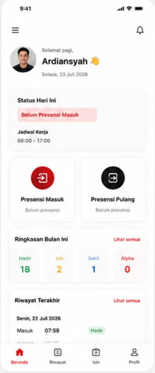
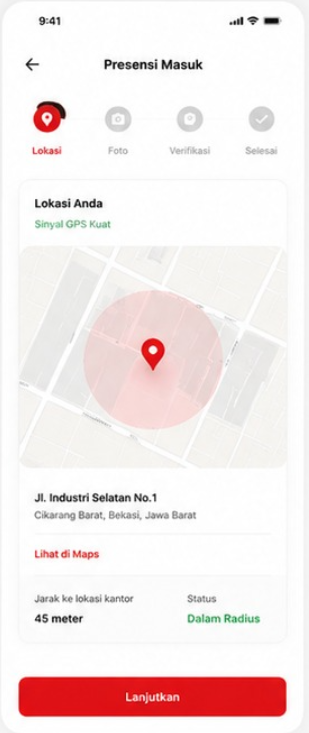
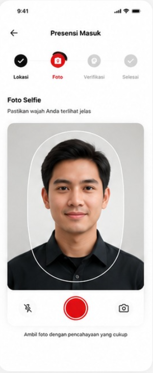
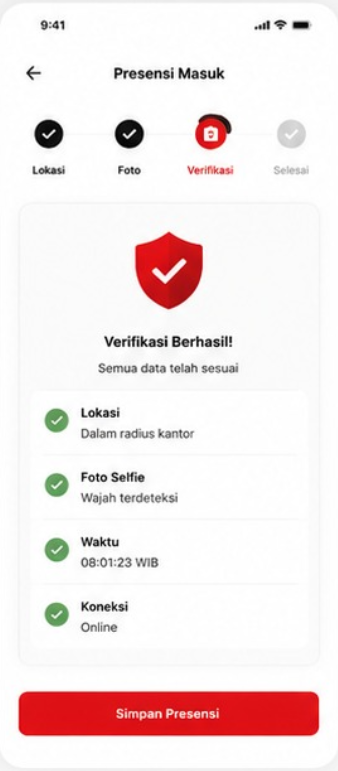
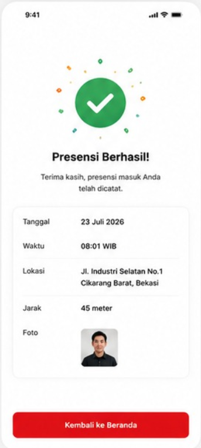
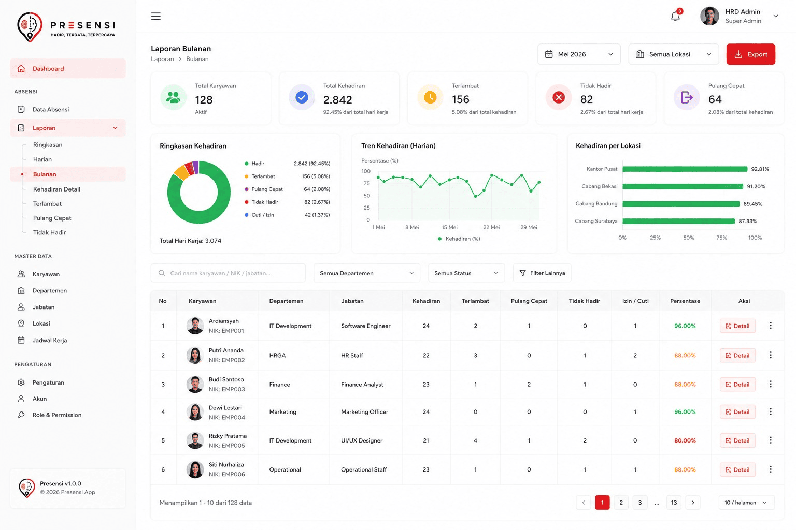
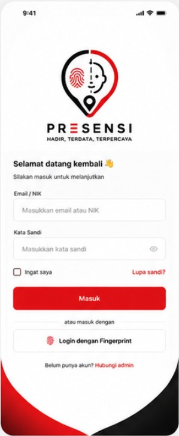
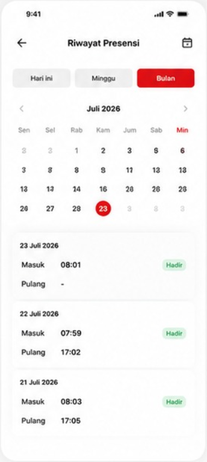
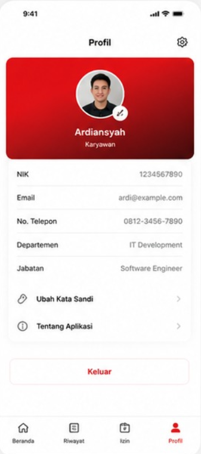

Foto Selfie
Verifikasi kehadiran memakai foto real-time, diambil langsung dari kamera saat presensi berlangsung.
Absensi digital untuk tim modern
Presensi memvalidasi setiap absen dengan foto selfie real-time dan titik GPS aktual — jadi laporan kehadiran tim Anda akurat, transparan, dan tidak bisa dititip.

Belum Presensi Masuk
Jadwal 08:00 – 17:00
Sinyal GPS Kuat
Dalam radius kantor
Aman & Terpercaya
Akurat & Realtime
Praktis & Efisien
Laporan Lengkap
Alur presensi masuk
Ini bukan ilustrasi — ini alur asli yang dilalui setiap karyawan saat presensi masuk di aplikasi Presensi.

Aplikasi membaca sinyal GPS dan menghitung jarak nyata karyawan ke titik kantor terdaftar sebelum presensi bisa dilanjutkan.

Kamera diambil langsung saat itu juga — bukan unggah galeri — memastikan orang yang hadir memang orang yang bersangkutan.

Lokasi, wajah, waktu, dan status koneksi dicocokkan dalam hitungan detik sebelum data dikunci ke server.

Setiap presensi tersimpan lengkap dengan cap waktu, koordinat, dan foto — siap dilihat kembali di riwayat maupun laporan HR.
Yang didapat setiap tim
Verifikasi kehadiran memakai foto real-time, diambil langsung dari kamera saat presensi berlangsung.
Titik absensi dicatat secara realtime dengan GPS, dibandingkan langsung terhadap radius kantor terdaftar.
Setiap catatan kehadiran melewati pengecekan lokasi, wajah, dan waktu sebelum tersimpan sebagai data resmi.
Riwayat harian, mingguan, dan bulanan tersusun rapi — siap diekspor untuk keperluan payroll dan evaluasi.
Untuk tim HR & admin
Dashboard web memberi HR gambaran menyeluruh: siapa hadir, siapa terlambat, dan lokasi mana yang butuh perhatian — tanpa rekap manual.

Di dalam aplikasi

Masuk dengan email/NIK atau fingerprint

Riwayat presensi per hari, minggu, bulan

Profil, NIK, dan data kepegawaian
Coba sekarang
Gratis untuk tim kecil. Tanpa kartu kredit, siap pakai dalam 5 menit.